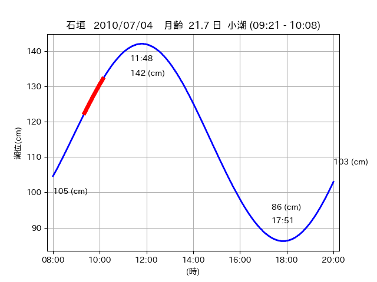
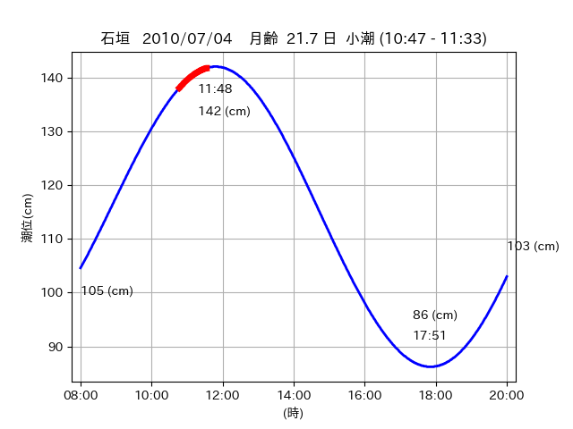

<!DOCTYPE html>
<html>
<head>
    
    <meta http-equiv="content-type" content="text/html; charset=UTF-8" />
    
        <script>
            L_NO_TOUCH = false;
            L_DISABLE_3D = false;
        </script>
    
    <style>html, body {width: 100%;height: 100%;margin: 0;padding: 0;}</style>
    <style>#map {position:absolute;top:0;bottom:0;right:0;left:0;}</style>
    <script src="https://cdn.jsdelivr.net/npm/leaflet@1.9.3/dist/leaflet.js"></script>
    <script src="https://code.jquery.com/jquery-3.7.1.min.js"></script>
    <script src="https://cdn.jsdelivr.net/npm/bootstrap@5.2.2/dist/js/bootstrap.bundle.min.js"></script>
    <script src="https://cdnjs.cloudflare.com/ajax/libs/Leaflet.awesome-markers/2.0.2/leaflet.awesome-markers.js"></script>
    <link rel="stylesheet" href="https://cdn.jsdelivr.net/npm/leaflet@1.9.3/dist/leaflet.css"/>
    <link rel="stylesheet" href="https://cdn.jsdelivr.net/npm/bootstrap@5.2.2/dist/css/bootstrap.min.css"/>
    <link rel="stylesheet" href="https://netdna.bootstrapcdn.com/bootstrap/3.0.0/css/bootstrap-glyphicons.css"/>
    <link rel="stylesheet" href="https://cdn.jsdelivr.net/npm/@fortawesome/fontawesome-free@6.2.0/css/all.min.css"/>
    <link rel="stylesheet" href="https://cdnjs.cloudflare.com/ajax/libs/Leaflet.awesome-markers/2.0.2/leaflet.awesome-markers.css"/>
    <link rel="stylesheet" href="https://cdn.jsdelivr.net/gh/python-visualization/folium/folium/templates/leaflet.awesome.rotate.min.css"/>
    
            <meta name="viewport" content="width=device-width,
                initial-scale=1.0, maximum-scale=1.0, user-scalable=no" />
            <style>
                #map_962227b07eca6ac8930e357fdbdbcfa8 {
                    position: relative;
                    width: 2048.0px;
                    height: 1600.0px;
                    left: 0.0%;
                    top: 0.0%;
                }
                .leaflet-container { font-size: 1rem; }
            </style>
        
</head>
<body>
    
    
            <div class="folium-map" id="map_962227b07eca6ac8930e357fdbdbcfa8" ></div>
        
</body>
<script>
    
    
            var map_962227b07eca6ac8930e357fdbdbcfa8 = L.map(
                "map_962227b07eca6ac8930e357fdbdbcfa8",
                {
                    center: [24.367, 123.96],
                    crs: L.CRS.EPSG3857,
                    ...{
  "zoom": 12,
  "zoomControl": true,
  "preferCanvas": false,
}

                }
            );

            

        
    
            var tile_layer_f32a9df116e75ce56f1cb3439987ac02 = L.tileLayer(
                "https://cyberjapandata.gsi.go.jp/xyz/seamlessphoto/{z}/{x}/{y}.jpg",
                {
  "minZoom": 0,
  "maxZoom": 18,
  "maxNativeZoom": 18,
  "noWrap": false,
  "attribution": "\u5730\u7406\u9662\u5730\u56f3",
  "subdomains": "abc",
  "detectRetina": false,
  "tms": false,
  "opacity": 1,
}

            );
        
    
            tile_layer_f32a9df116e75ce56f1cb3439987ac02.addTo(map_962227b07eca6ac8930e357fdbdbcfa8);
        
    
            var marker_e55ce208665c425469bd682e3b2bdeb6 = L.marker(
                [24.3676, 123.9609],
                {
}
            ).addTo(map_962227b07eca6ac8930e357fdbdbcfa8);
        
    
            var icon_55928942213865de2b1c50d757e8cb09 = L.AwesomeMarkers.icon(
                {
  "markerColor": "orange",
  "iconColor": "white",
  "icon": "info-sign",
  "prefix": "glyphicon",
  "extraClasses": "fa-rotate-0",
}
            );
        
    
        var popup_853774649f27dbb4f19d7a3b9c6750f9 = L.popup({
  "maxWidth": "100%",
});

        
            
                var html_b3b45f622de9c18e921eac6e130e0f20 = $(`<div id="html_b3b45f622de9c18e921eac6e130e0f20" style="width: 100.0%; height: 100.0%;"><table><tr><td></td></tr><tr><td><center>20100704 No.1 </center></table></td></tr></table</div>`)[0];
                popup_853774649f27dbb4f19d7a3b9c6750f9.setContent(html_b3b45f622de9c18e921eac6e130e0f20);
            
        

        marker_e55ce208665c425469bd682e3b2bdeb6.bindPopup(popup_853774649f27dbb4f19d7a3b9c6750f9)
        ;

        
    
    
                marker_e55ce208665c425469bd682e3b2bdeb6.setIcon(icon_55928942213865de2b1c50d757e8cb09);
            
    
            var poly_line_ac8f85d1865f49a795100478bfa899d3 = L.polyline(
                [[24.3676, 123.9609], [24.3657, 123.958]],
                {"bubblingMouseEvents": true, "color": "#00FFFF", "dashArray": null, "dashOffset": null, "fill": false, "fillColor": "#00FFFF", "fillOpacity": 0.2, "fillRule": "evenodd", "lineCap": "round", "lineJoin": "round", "noClip": false, "opacity": 1.0, "smoothFactor": 1.0, "stroke": true, "weight": 3}
            ).addTo(map_962227b07eca6ac8930e357fdbdbcfa8);
        
    
            var marker_0928629baf6686901be840ea2128f3ab = L.marker(
                [24.3756, 123.9433],
                {
}
            ).addTo(map_962227b07eca6ac8930e357fdbdbcfa8);
        
    
            var icon_55fd6a82a40bbe38fbe143a256ffceca = L.AwesomeMarkers.icon(
                {
  "markerColor": "orange",
  "iconColor": "white",
  "icon": "info-sign",
  "prefix": "glyphicon",
  "extraClasses": "fa-rotate-0",
}
            );
        
    
        var popup_d6a0f502ea33c25d18bbf54a3a3deae5 = L.popup({
  "maxWidth": "100%",
});

        
            
                var html_58dd66a046f7d17f4c85af708ce9b8eb = $(`<div id="html_58dd66a046f7d17f4c85af708ce9b8eb" style="width: 100.0%; height: 100.0%;"><table><tr><td></td></tr><tr><td><center>20100704 No.2 </center></table></td></tr></table</div>`)[0];
                popup_d6a0f502ea33c25d18bbf54a3a3deae5.setContent(html_58dd66a046f7d17f4c85af708ce9b8eb);
            
        

        marker_0928629baf6686901be840ea2128f3ab.bindPopup(popup_d6a0f502ea33c25d18bbf54a3a3deae5)
        ;

        
    
    
                marker_0928629baf6686901be840ea2128f3ab.setIcon(icon_55fd6a82a40bbe38fbe143a256ffceca);
            
    
            var poly_line_9e04f31fc9aeeeca5beaccd2f62ff4fd = L.polyline(
                [[24.3756, 123.9433], [24.3744, 123.9469]],
                {"bubblingMouseEvents": true, "color": "#00FFFF", "dashArray": null, "dashOffset": null, "fill": false, "fillColor": "#00FFFF", "fillOpacity": 0.2, "fillRule": "evenodd", "lineCap": "round", "lineJoin": "round", "noClip": false, "opacity": 1.0, "smoothFactor": 1.0, "stroke": true, "weight": 3}
            ).addTo(map_962227b07eca6ac8930e357fdbdbcfa8);
        
    
            var marker_6b9dc0610b10998cce41e6e4c18b7d0d = L.marker(
                [24.3743, 123.9462],
                {
}
            ).addTo(map_962227b07eca6ac8930e357fdbdbcfa8);
        
    
            var icon_7c363d96a8fc580ddef05b182cf06b2b = L.AwesomeMarkers.icon(
                {
  "markerColor": "orange",
  "iconColor": "white",
  "icon": "info-sign",
  "prefix": "glyphicon",
  "extraClasses": "fa-rotate-0",
}
            );
        
    
        var popup_6fec37512beb7427fd0a34c4c6249869 = L.popup({
  "maxWidth": "100%",
});

        
            
                var html_54f460ac2da3210547673465a2bd21f8 = $(`<div id="html_54f460ac2da3210547673465a2bd21f8" style="width: 100.0%; height: 100.0%;"><table><tr><td></td></tr><tr><td><center>20100704 No.3 </center></table></td></tr></table</div>`)[0];
                popup_6fec37512beb7427fd0a34c4c6249869.setContent(html_54f460ac2da3210547673465a2bd21f8);
            
        

        marker_6b9dc0610b10998cce41e6e4c18b7d0d.bindPopup(popup_6fec37512beb7427fd0a34c4c6249869)
        ;

        
    
    
                marker_6b9dc0610b10998cce41e6e4c18b7d0d.setIcon(icon_7c363d96a8fc580ddef05b182cf06b2b);
            
    
            var poly_line_c6787468db1a6b38c938c29b7131150c = L.polyline(
                [[24.3743, 123.9462], [24.3764, 123.9429]],
                {"bubblingMouseEvents": true, "color": "#FF00FF", "dashArray": null, "dashOffset": null, "fill": false, "fillColor": "#FF00FF", "fillOpacity": 0.2, "fillRule": "evenodd", "lineCap": "round", "lineJoin": "round", "noClip": false, "opacity": 1.0, "smoothFactor": 1.0, "stroke": true, "weight": 3}
            ).addTo(map_962227b07eca6ac8930e357fdbdbcfa8);
        
    
            var marker_ac8beb61009ae40217bffcfbee56c4b3 = L.marker(
                [24.3683, 123.9614],
                {
}
            ).addTo(map_962227b07eca6ac8930e357fdbdbcfa8);
        
    
            var icon_98a458f195598883d15fe37cd55e519c = L.AwesomeMarkers.icon(
                {
  "markerColor": "orange",
  "iconColor": "white",
  "icon": "info-sign",
  "prefix": "glyphicon",
  "extraClasses": "fa-rotate-0",
}
            );
        
    
        var popup_24fc0051adb903f821b37470e0e5e295 = L.popup({
  "maxWidth": "100%",
});

        
            
                var html_e31c3bd643470da94af2b9bc73a5ee36 = $(`<div id="html_e31c3bd643470da94af2b9bc73a5ee36" style="width: 100.0%; height: 100.0%;"><table><tr><td></td></tr><tr><td><center>20100704 No.4 </center></table></td></tr></table</div>`)[0];
                popup_24fc0051adb903f821b37470e0e5e295.setContent(html_e31c3bd643470da94af2b9bc73a5ee36);
            
        

        marker_ac8beb61009ae40217bffcfbee56c4b3.bindPopup(popup_24fc0051adb903f821b37470e0e5e295)
        ;

        
    
    
                marker_ac8beb61009ae40217bffcfbee56c4b3.setIcon(icon_98a458f195598883d15fe37cd55e519c);
            
    
            var poly_line_e7cc1b8e2a21cc3391cf16655a7b6bdd = L.polyline(
                [[24.3683, 123.9614], [24.3663, 123.9579]],
                {"bubblingMouseEvents": true, "color": "#00FFFF", "dashArray": null, "dashOffset": null, "fill": false, "fillColor": "#00FFFF", "fillOpacity": 0.2, "fillRule": "evenodd", "lineCap": "round", "lineJoin": "round", "noClip": false, "opacity": 1.0, "smoothFactor": 1.0, "stroke": true, "weight": 3}
            ).addTo(map_962227b07eca6ac8930e357fdbdbcfa8);
        
</script>
</html>